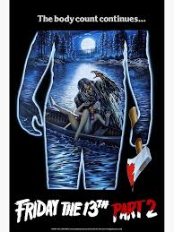

Dispnible en:
plutoTVHellraiser
mini resumen: Dos meses después de los asesinatos en el campamento de verano de Crystal Lake, Alice Hardy, la única superviviente de la matanza, se está recuperando de su traumática experiencia. En su apartamento, cuando Alice abre el refrigerador para darle comida a su gato, encuentra la cabeza decapitada de Pamela Voorhees y es asesinada con un picahielo en la sien por un hombre desconocido. El cual se convertiria en un icono del terror en el futuro.
Créditos y reparto
| Dirección y guion: | Clive Barker |
| Producción: | Christopher Figg |
| Basada en: | The Hellbound Heart,de Clive Barker |
| Música: | Christopher Young |
| Fotografía: | Robin Vidgeon |
| Montaje: | Robin Vidgeon, Tony Randel |
| País: | Reino Unido |
| Fecha de estreno | 10 de septiembre de 1987 (Londres) |
| genero | Terror, Gore |
| Duración: | 94 minutos |
| Clasificación: | +18 (en la mayoria de los País:es) |